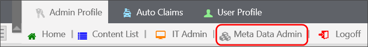
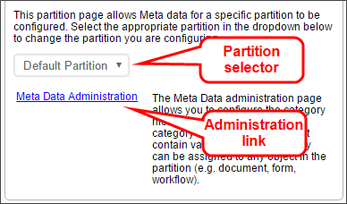
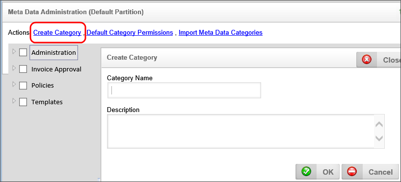
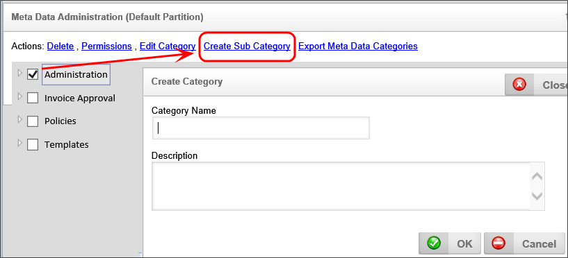
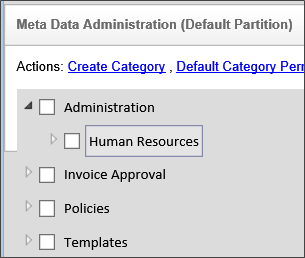
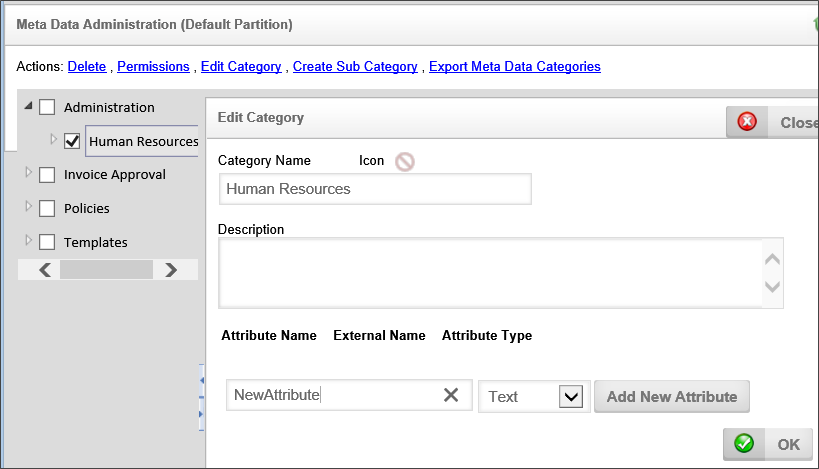
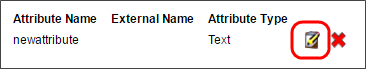
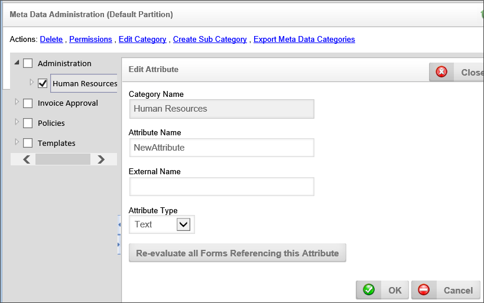

We can’t show you a working sample of this feature in the BP Logix [Samples] folder, since Meta Data categories cannot be transferred between partitions. So, let's do an in-depth walk through of how and why to create Meta Data categories and attributes inside of Process Director.
First of all, you must have access to the Meta Data Admin area to create the categories of Meta Data that will apply to the objects inside Process Director. Access to Meta Data Admin is only available to users with System Administration privileges.
Select your admin profile and look for the Meta Data Admin button. If you don’t see that button at the top of the screen, you may have to change your Admin profile in the IT Admin > Configuration section to add the button to your Workspace.


The first and most important step in classifying your content with Meta Data is to define your category schema (i.e. taxonomy). This schema defines a hierarchical tree structure of categories. Each category can have any number of attributes which allow custom information to be associated with the category when it is assigned to an object in the Process Director database. This tree is the foundation for categorizing (or “tagging”) objects and defines how information is organized, processed and distributed. The category tree, or any branch within the tree, should represent how you want data organized in your enterprise.
To create Meta Data categories in the Meta Data Admin area, click the link labeled Create Category to open the Create Category page.
Insert a name and a brief description of what this category contains. Then click the OK button.

A category may have subcategories as well. To create a subcategory, click on the parent category to select it, then click the Create Sub Category link.

In this example, there is an Administration category and we will create a new subcategory called "Human Resources".
When you have finished creating your category, click the OK button to save it.
You should now see the new Human Resources subcategory under the Administration parent category.

When you are finished creating your Meta Data categories, you can leave the Meta Data Admin area.
In addition to creating categories, you can also create Attributes for a category. Attributes are different than categories in that, instead of being a predefined value that is assigned to an object or instance, they are data fields into which you can store information from a form or process.
To create an attribute, click on the Category for which you'd like to create the attribute. Type the name of your new Meta Data attribute into the Attribute Name text box, select the type of data you’ll be storing from the Attribute Type dropdown, then click the Add New Attribute button

Selecting the Edit Attribute icon will enable you to change the type of Meta Data later or add an External Name to the attribute.

The External Name can be used while importing XML information from other systems into Process Director.
The Re-evaluate all forms referencing this Attribute button should be used when you change attribute types. If you were previously storing numbers in a text format and then switched to numeric, any business rules or other form data about that attribute may be evaluated differently.

Once the desired attributes have been created, you can exit the Meta Data Admin area.